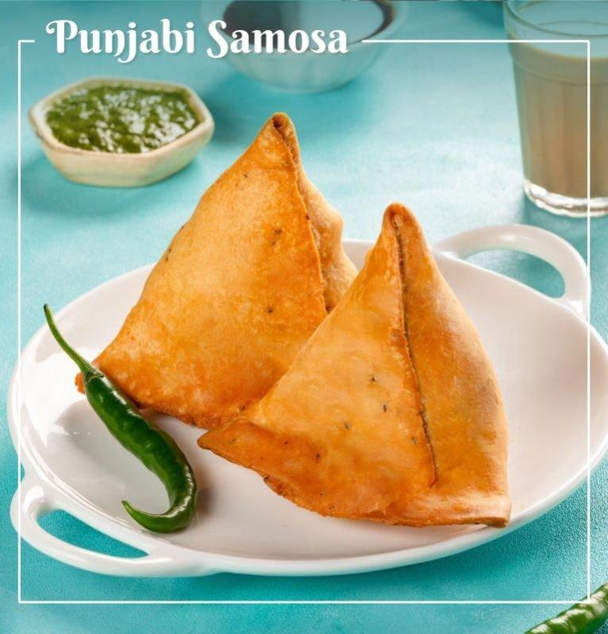

પંજાબી સમોસા
|
👨🍳 બનાવવાની પ્રક્રિયા (Process)1. લોટ તૈયાર કરો:એક વાસણમાં મેંદો, મીઠું, અજમો અને તેલ ઉમેરો. હાથથી સારી રીતે મિક્સ કરો. થોડું-થોડું પાણી ઉમેરીને કઠણ લોટ બાંધો. લોટને ઢાંકીને લગભગ 20 મિનિટ માટે રાખો.2. સ્ટફિંગ તૈયાર કરો:કડાઈમાં થોડું તેલ ગરમ કરીને જીરું અને વરિયાળી ઉમેરો. ત્યારબાદ આદુ અને લીલા મરચાં ઉમેરો. લીલા વટાણા નાખીને થોડા સમય માટે સાંતળો. હવે બાફેલા બટાકા મેશ કરીને ઉમેરો. તેમાં ધાણા પાવડર, લાલ મરચું, ગરમ મસાલો, આમચૂર પાવડર અને મીઠું ઉમેરો. બધું સારી રીતે મિક્સ કરીને 2–3 મિનિટ સાંતળો. છેલ્લે કોથમીર ઉમેરો અને મિશ્રણ ઠંડું થવા દો.3. સમોસા બનાવો:લોટના નાના લૂઆ બનાવીને પાતળી પુરી જેવી વણો. તેને વચ્ચેથી કાપીને બે અડધા ભાગ કરો. એક ભાગને કોન આકારમાં વાળી તેની ધારને પાણીથી ચોંટાડો. કોનમાં તૈયાર કરેલું બટાકાનું સ્ટફિંગ भरो અને ઉપરની ધારને સારી રીતે બંધ કરો.4. સમોસા તળો:કડાઈમાં તેલ ગરમ કરો. તેલ ખૂબ ગરમ ન હોવું જોઈએ. સમોસાને મધ્યમ-ધીમા તાપે ધીમે ધીમે તળો, જેથી બહારથી સરસ ક્રિસ્પી અને અંદરથી સારી રીતે શેકાયેલા બને.સમોસા ગોલ્ડન બ્રાઉન થાય ત્યારે બહાર કાઢી લો. |
 |